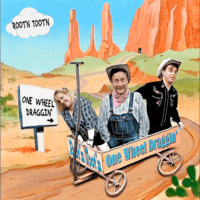

Root'n Toot'n - One Wheel Draggin' (Album, 2018)
01 - One Wheel Draggin' (2:32)
02 - Drivin' Nails In My Coffin (2:56)
03 - Move It On Over (3:05)
04 - Dog House Boogie (2:32)
05 - Cash On The Barrel Head (2:38)
06 - Goodbye Lonesome Hello Baby Doll (2:04)
07 - Mississippi Gal (2:28)
08 - He'll Have To Go (2:52)
09 - I'm Satisfied With You (2:31)
10 - Let's Take The Long Way Home (2:51)
11 - Meaning Of Regret (2:53)
12 - You Gotta Be My Baby (2:27)
13 - Don't Just Stand There (2:35)
14 - Slippin' & Slidin' (2:13)
© Skip Records :: [SKCD-19]
Notes
Review
113/366 (Project 366)
They called it "Hillbilly Country music with a Rockabilly twist". And it certainly sounds like that!
Root'n Toot'n is another impressive project by Colin Mee and Mandy Stroud. Tremendous mood and great style of rustic music of old times. Hillbilly rave and restraint of Country, with the energy of Rockaiblly. Just excellent tunes and amazing enthusiasm. Smooth and wonder guitars, brilliant vocals and great double bass. Really charming lead guitar and such a nice rhythm. The songs are not boring and with different musical motives, although all in one very classy style. It sounds easy and relaxed. But in fact, the performance is at a very high level and vividly enough.